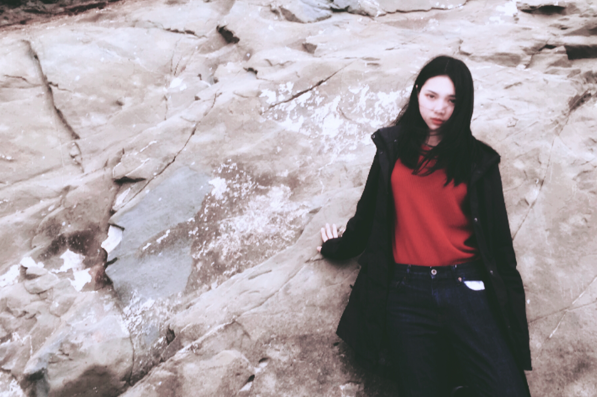

My name is Xiaowen Zheng. I was interested in drawing when I was a kid, and I like to draw on anything like the wall, the curtain, and the desk. My mother was mad at me when I drew on them, but she could not stop me. I like design as well, so now I am taking the VMD 105 to enhance my skills for visual media.
VMD 105 Final Project